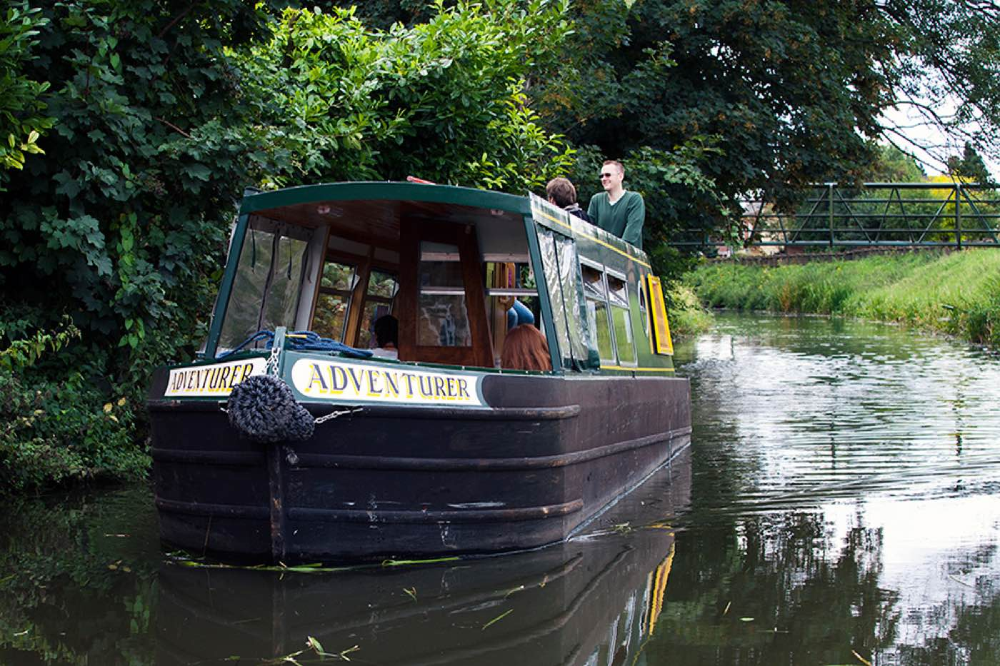
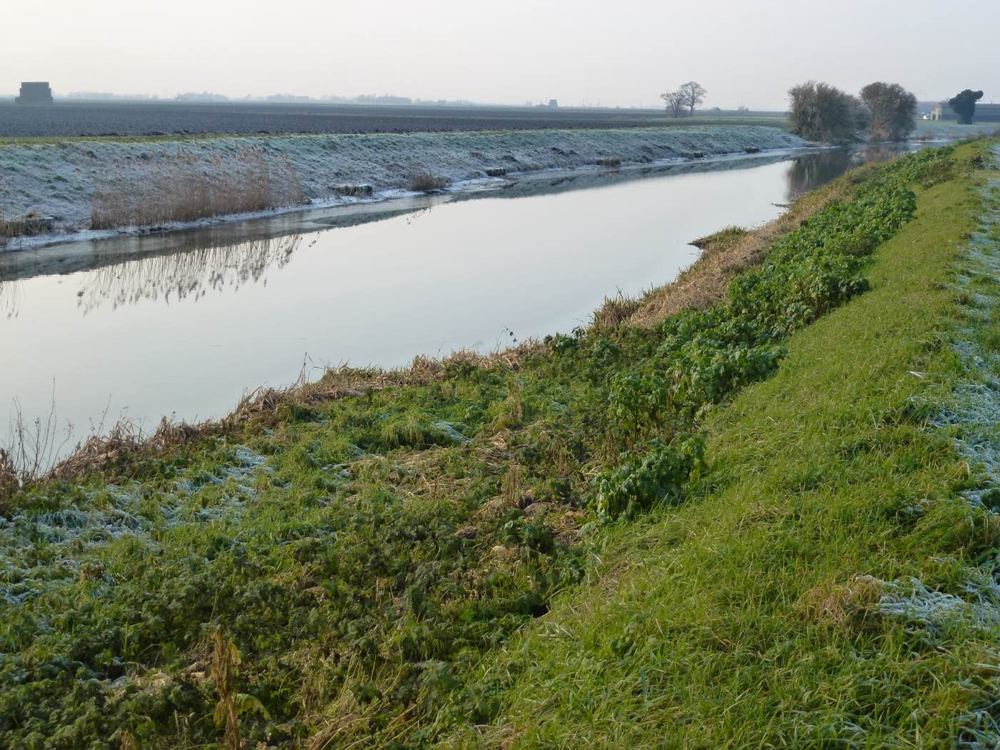

Fox Narrowboats, March
Your own narrowboat for the day on the quiet Fenland rivers west of March. No locks toward Benwick, a pub at the turn, back by 4.30.
49 min drive£260 Sat or Sun10 seatsDog £10Flush toiletCovered seatingNo locks9.30 to 6
"Eight of us, all over 70, hired the day boat Adventurer last week. The boat was very well equipped for a day on the river and was easy to handle."
Jennifer · TripAdvisor · June 2023 · 5 stars"The boat was excellent with lots of room, two burner hob to make hot drinks etc. A fridge, toilet and heater... The staff were really helpful and friendly."
phil s · TripAdvisor · September 2024 · 5 starsMore at foxboats.co.ukAll reviews01354 652770Open 20, 26 and 27 September. Closed for the year from 3 October. Ask about heating and how Nan boards.